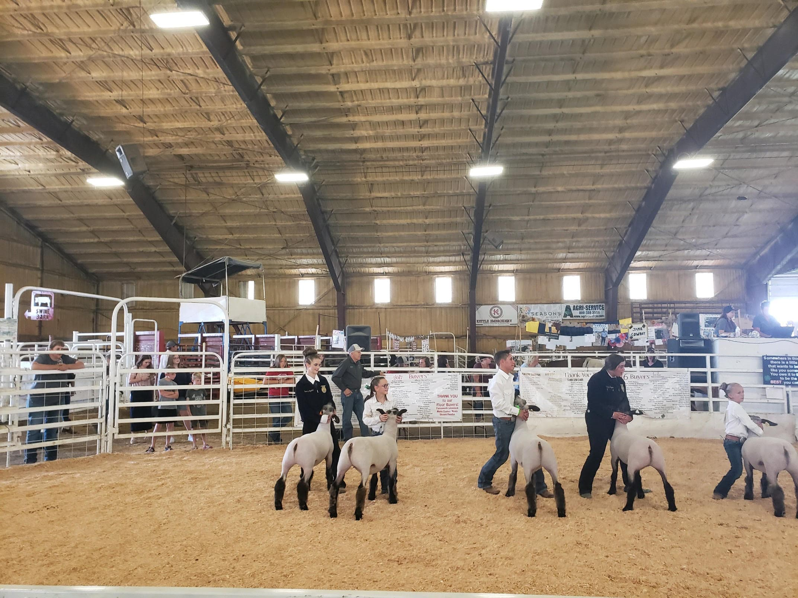

When it comes to livestock many people see only the sowing of the animals, and think that they cannot get involve. All it takes is looking into local 4-h and FFA teams, and a person can become more involed in a simple way livestock judging.
As the agricultural world seems to change often but a few things stay the same, such as the need to give reasonings after judging a set of animals. This website will focus on giving tips and tricks for your seasonings for multiple species. We will also go over a broad spectrem of what to look for in each species for Market Judging
